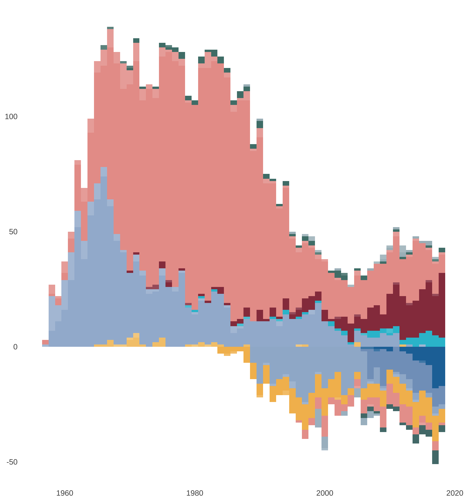
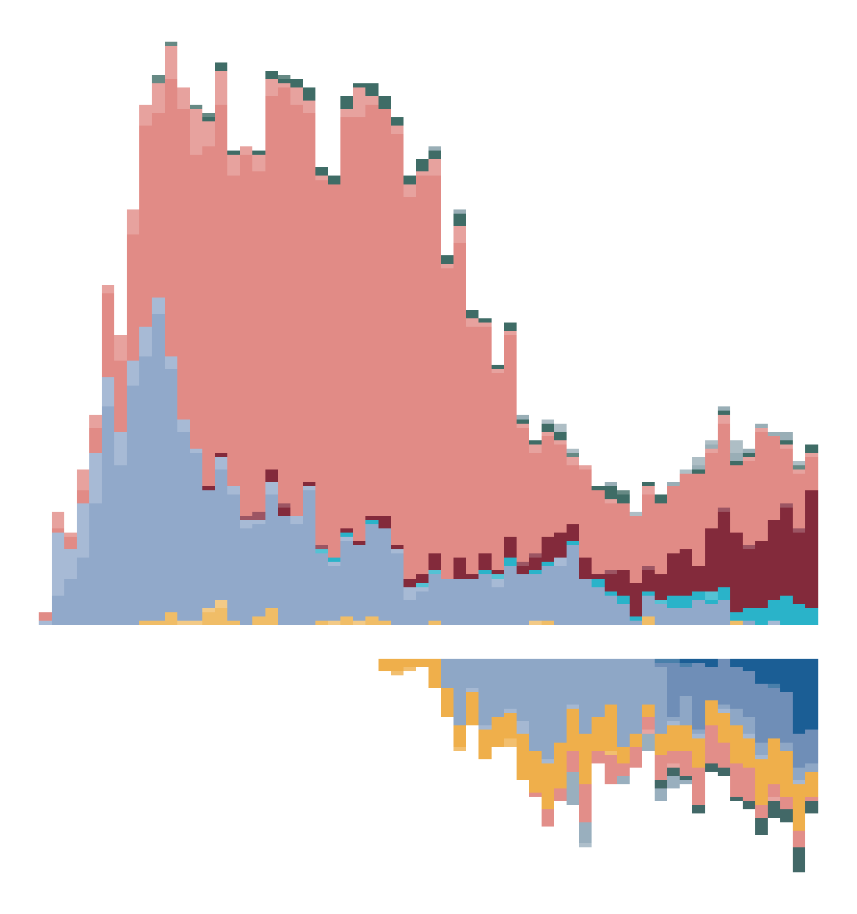
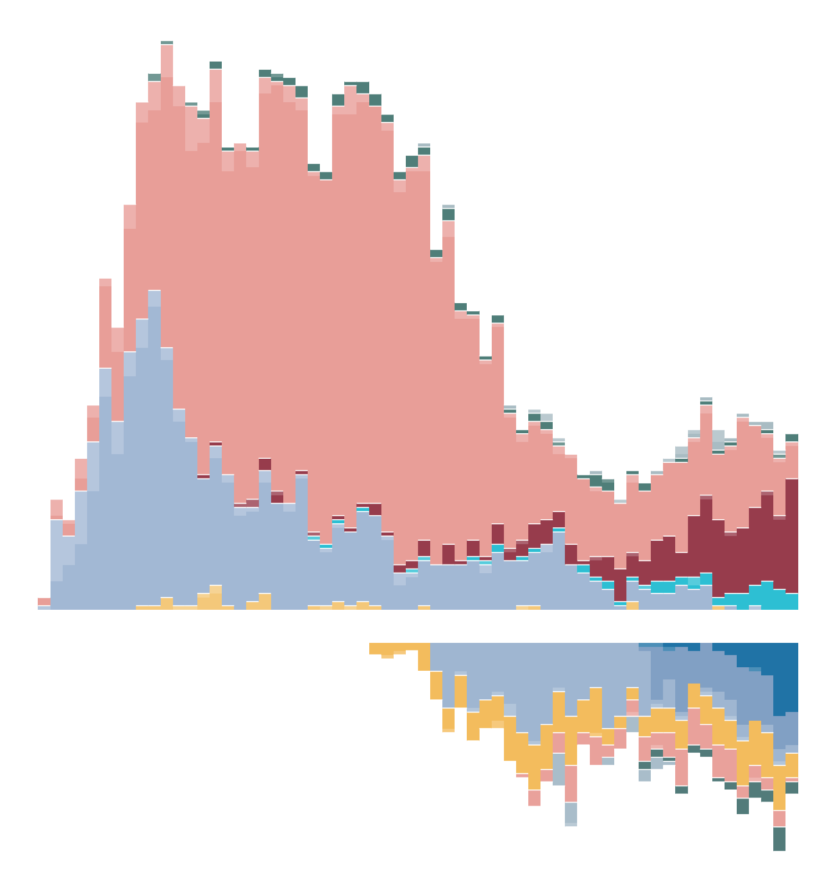
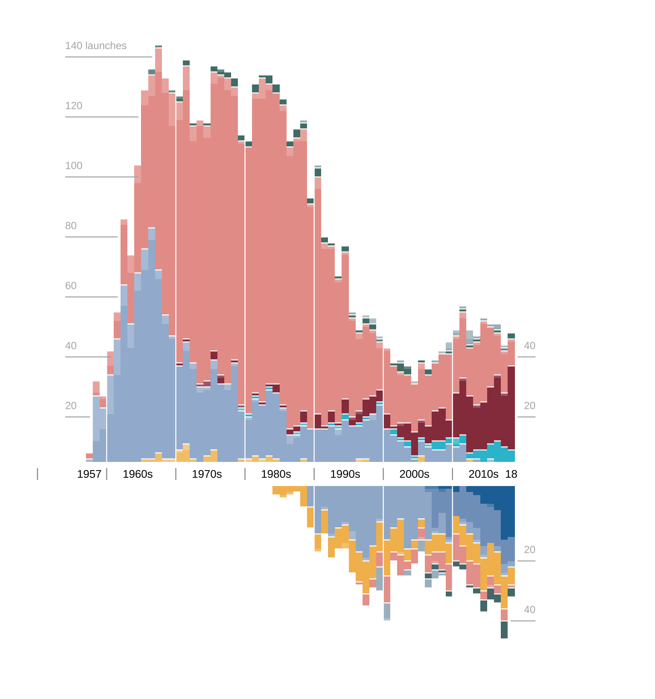
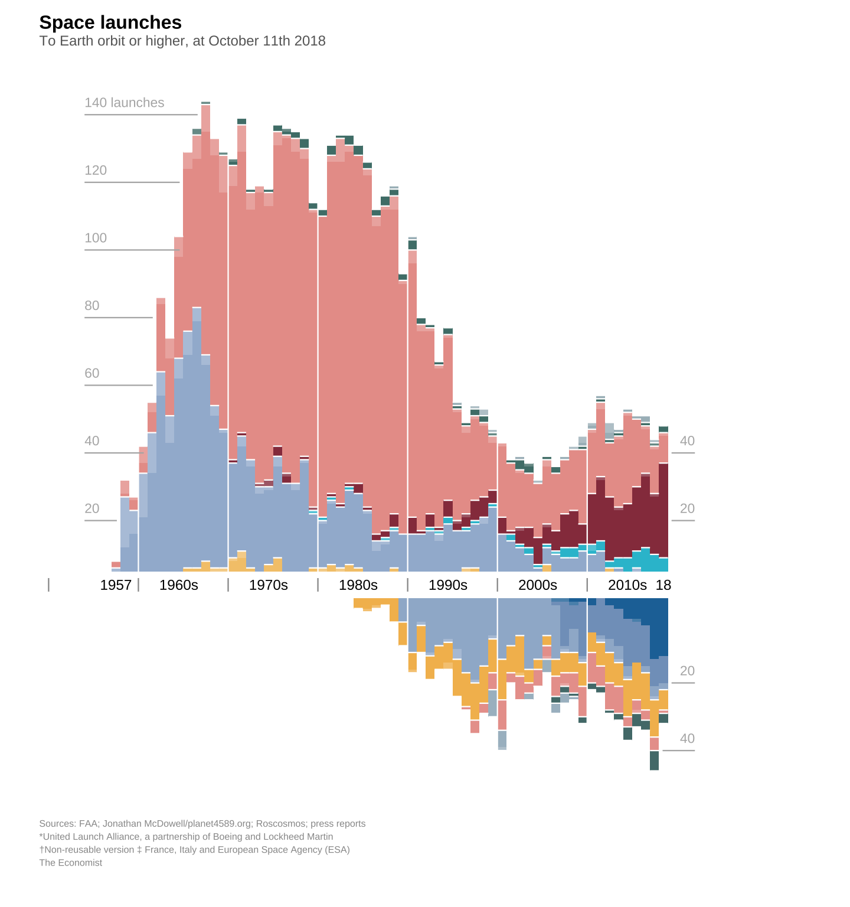
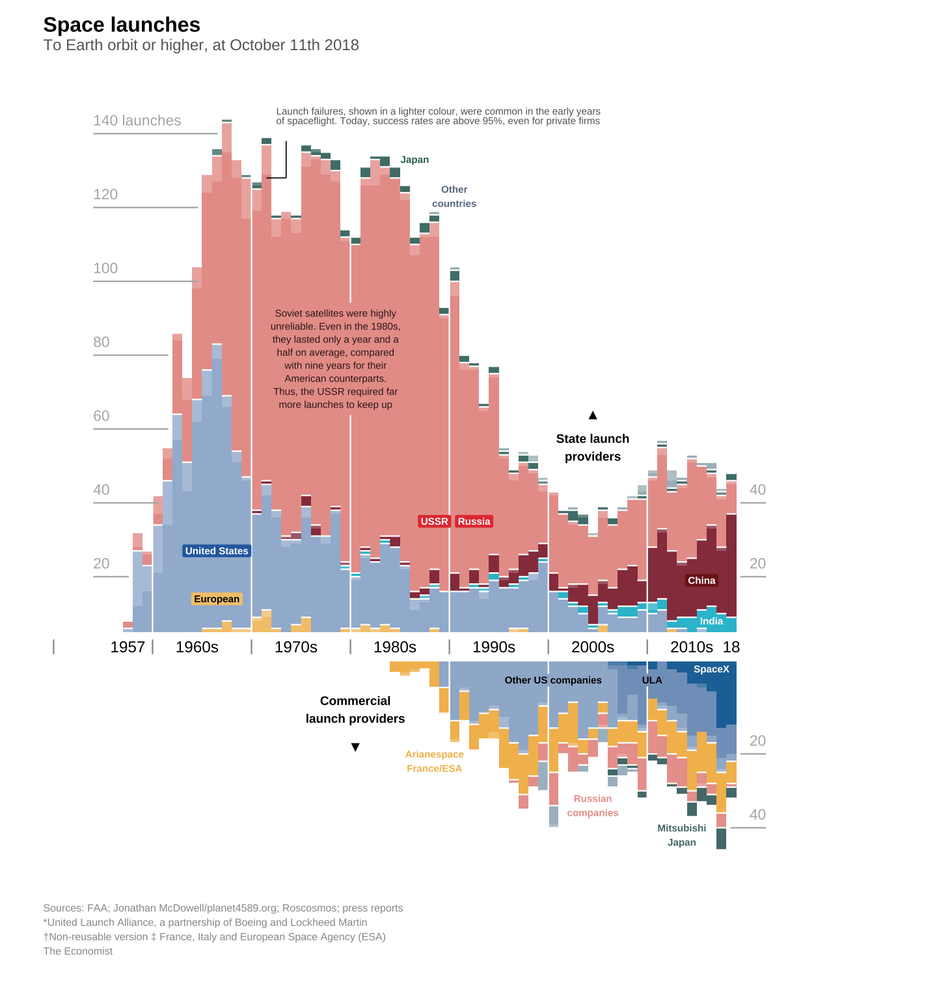
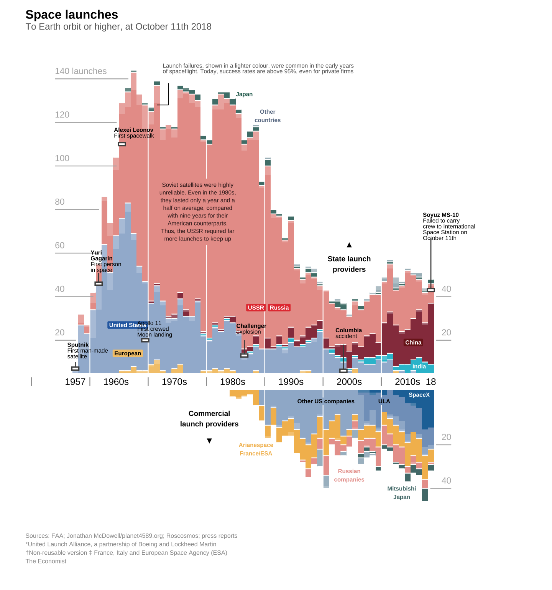
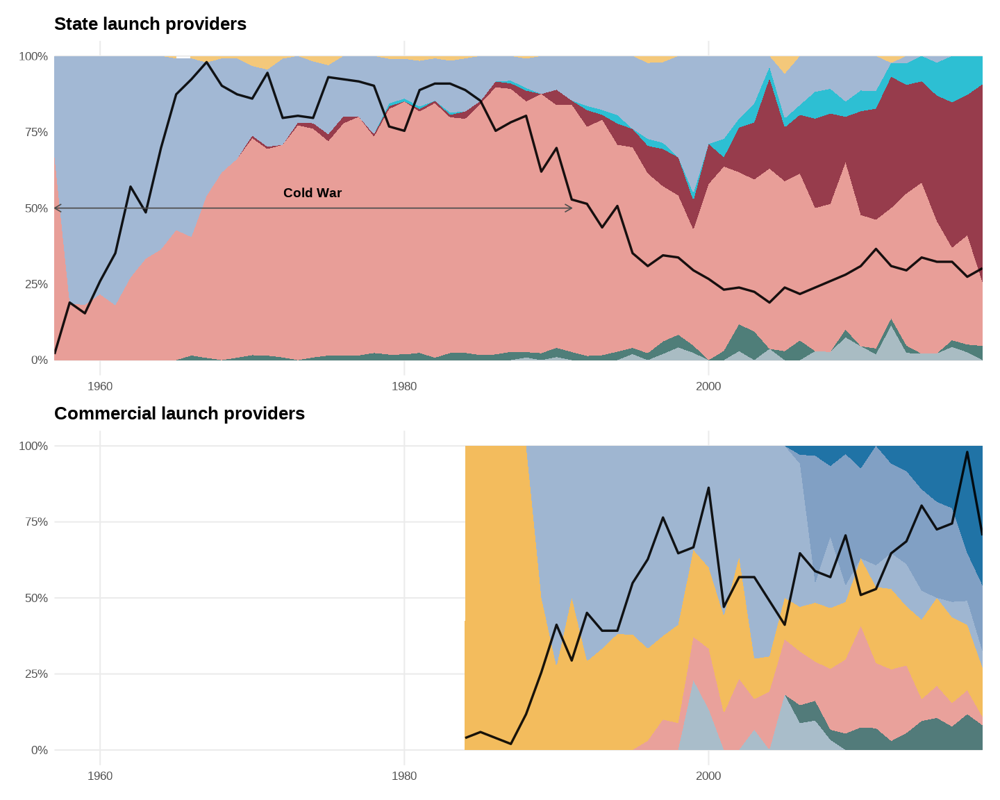
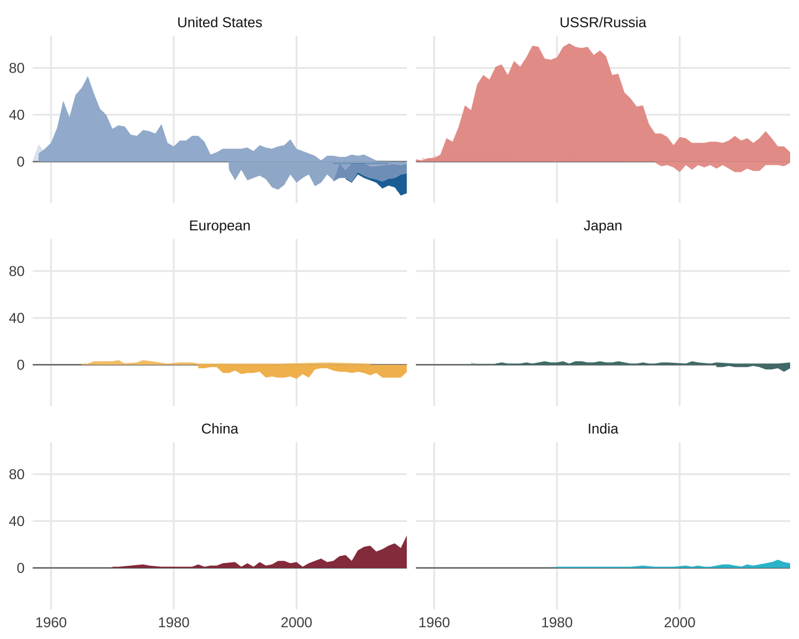

A snapshot of global space launches from 1957 to 2018, highlighting the shift from Cold War superpower dominance to a space race led by rising powers and private companies.
Once the exclusive domain of Cold War superpowers and their state-run space agencies, space launches have become increasingly driven by commercial companies and emerging nations. This shift is clearly captured in a visualization published in The Economist in October 2018, titled “The space race is dominated by new contenders,” which presents detailed space launch data from 1957 to 2018.
The graph first distinguishes between state and commercial launch providers, revealing the decline of Cold War dominance alongside the rise of private companies. It then highlights major state actors and leading commercial agencies, bringing into focus the growing participation of Asian emerging powers in the space race. By also incorporating launch success and failure rates, the visualization shows how early space exploration was marked by frequent failures, in contrast to recent years where even commercial providers achieve success rates exceeding 95%.
This visualization was chosen for its ability to present both the global landscape and the finer details of the modern space race through multiple layers of information, without becoming overwhelming. It serves as a compelling example of how complex geopolitical and technological shifts can be communicated clearly and effectively through thoughtful visual design.
This project makes use of package library in RStudio to support efficient data cleaning, transformation, and visualization. Core visualization packages are combined with supplementary tools to streamline the workflow and produce clear, expressive graphics. In addition, fonts with high readability were selected to closely match the style of the original visualization, ensuring visual consistency and a polished appearance.
library(tidyverse)
library(scales)
# Visualization utility
library(ggtext)
library(patchwork)
# Font rendering and management
sysfonts::font_add_google("Roboto Condensed", "roboto_condensed")
showtext::showtext_auto()The primary data source for this project is Jonathan McDowell’s JSR Launch Vehicle Database, which provides comprehensive records of global space launch activities. In addition, The Economist has made downloadable data and a codebook available via GitHub, allowing further insight into the structure and intent of the original visualization.
Two main datasets were used: launches, containing records of successful and failed space launches, and agencies, detailing space launch providers. Prior to analysis, unnecessary variables were removed from both datasets, after which they were imported into RStudio. The datasets were then joined to create a unified data frame that served as the foundation for all subsequent data processing and visualization steps.
launches <- readr::read_csv("launches_edited.csv")
agencies <- readr::read_csv("agencies_edited.csv")
df <- launches %>%
left_join(agencies, by = "agency", suffix = c("_launch", "_agency")) %>%
mutate(
state_code = coalesce(state_code_agency, state_code_launch),
agency_type = coalesce(agency_type_agency, agency_type_launch)
) %>%
select(-ends_with("_launch"), -ends_with("_agency"))To ensure a consistent and interpretable visual structure, the launch providers were organized into predefined stacking levels. State and commercial providers were first separated into two broad groups, reflecting the central theme of the visualization: the transition from government-led space activity to commercially driven launches.
Within each group, major countries and agencies were assigned explicit factor levels. For state providers, these levels highlight historically dominant spacefaring nations alongside emerging participants, while commercial levels emphasize leading private companies as well as aggregated categories for smaller actors. By prefixing each level with its provider type (state or commercial), the stacking order remains unambiguous when the two groups are combined.
This structured hierarchy allows launches to be stacked in a controlled and meaningful order, preventing arbitrary sorting and ensuring that visual comparisons across time clearly communicate shifts in dominance and participation within the global space race.
state_levels <- c("European","United States","India","China",
"USSR/Russia","Japan","Other countries")
commercial_levels <- c("SpaceX","ULA","Other US companies",
"Arianespace","Russian companies","Mitsubishi","Other companies")
stack_levels <- c(
paste0("state_", state_levels),
paste0("commercial_", commercial_levels)
)A custom color palette was created to clearly differentiate space launch providers while maintaining visual consistency. Each country and agency was assigned a unique hex color, enabling easy identification across the visualization.
The same base colors were applied to both state and commercial providers by prefixing category names, ensuring that identical actors retain a consistent visual identity. This approach supports clear comparisons across groups and enhances the readability of the multi-layered chart.
base_palette <- c(
"United States" = "#a2b8d4",
"European" = "#f4c87a",
"USSR/Russia" = "#e89e98",
"China" = "#973c4c",
"Japan" = "#4f7e79",
"India" = "#2dbfd3",
"Other countries" = "#a9bcc3",
"Arianespace" = "#f3bc5d",
"Russian companies" = "#e9a19b",
"Mitsubishi" = "#527b7a",
"Other US companies"= "#9fb6d1",
"ULA" = "#81a0c4",
"SpaceX" = "#2073a6",
"Other companies" = "#a9bdca"
)
stack_palette <- c(
setNames(base_palette, paste0("state_", names(base_palette))),
setNames(base_palette, paste0("commercial_", names(base_palette)))
)This step reshapes the raw launch records into a format suitable for visualization. The data is first reduced to essential variables, and launch outcomes are simplified into success and fail to allow clear comparison over time.
Each launch is then classified as either state or commercial and grouped into standardized provider categories. Major spacefaring nations and leading commercial agencies are shown individually, while smaller actors are aggregated to avoid unnecessary complexity. These categories are converted into ordered factors to control the stacking structure of the chart.
Finally, launches are aggregated by year and outcome. Commercial launches are assigned negative values, while state launches remain positive, creating a mirrored layout that clearly contrasts the decline of state dominance with the rise of commercial providers.
summary_df <- df %>%
transmute(
launch_year,
outcome = if_else(category == "F", "fail", "success"),
provider_side = if_else(agency_type == "state", "state", "commercial"),
agency_stack = paste0(
provider_side, "_",
case_when(
# --- state
agency_type == "state" & state_code %in% c("F","UK","I","I-ESA","I-ELDO") ~ "European",
agency_type == "state" & state_code == "US" ~ "United States",
agency_type == "state" & state_code == "IN" ~ "India",
agency_type == "state" & state_code == "CN" ~ "China",
agency_type == "state" & state_code %in% c("SU","RU") ~ "USSR/Russia",
agency_type == "state" & state_code == "J" ~ "Japan",
agency_type == "state" ~ "Other countries",
# --- commercial
agency_type != "state" & agency == "SPX" ~ "SpaceX",
agency_type != "state" & str_detect(agency, "^ULA") ~ "ULA",
agency_type != "state" & agency == "AE" ~ "Arianespace",
agency_type != "state" & agency == "MHI" ~ "Mitsubishi",
agency_type != "state" & state_code == "RU" ~ "Russian companies",
agency_type != "state" & state_code == "US" & !agency %in% c("SPX","ULA") ~ "Other US companies",
TRUE ~ "Other companies"
)
) %>% factor(levels = stack_levels)
) %>%
count(launch_year, provider_side, agency_stack, outcome, name = "launches") %>%
mutate(
plot_value = if_else(provider_side == "commercial", -launches, launches),
outcome = factor(outcome, levels = c("success", "fail"))
)This first step creates the basic structure of the chart using a stacked bar plot. Annual launch counts are displayed as vertical bars, stacked by provider category to show each group’s contribution over time.
Color is used to distinguish providers, while transparency indicates launch outcomes, subtly separating successes from failures. Legends, labels, and gridlines are removed to keep the focus on the data, establishing a clean foundation for the subsequent refinement steps.
plot <- ggplot(summary_df) +
geom_col(
aes(x = launch_year, y = plot_value, fill = agency_stack, alpha = outcome),
width = 1,
position = position_stack(reverse = TRUE)
) +
scale_fill_manual(values = stack_palette, guide = "none") +
scale_alpha_manual(values = c(success = 1, fail = 0.85), guide = "none") +
labs(x = NULL, y = NULL) +
theme_minimal() +
theme(panel.grid = element_blank())
plot
In this step, a thin “gap” layer is intentionally inserted between state and commercial stacks to create visual breathing room around the center axis. A new factor level (commercial_gap) is added to the stacking order, and it is assigned a transparent color so it doesn’t appear as a real category.
To make the gap consistent across all years, one synthetic row per year is generated (gap_rows) with a fixed size (axis_gap) and a negative plot value so it sits on the commercial side of the mirrored chart. These rows are then appended to the existing summarized data.
As a result, the plot gains a stable separation between the two halves, improving readability and making the mirrored structure easier to interpret.
axis_gap <- 8
gap_level <- "commercial_gap"
stack_levels_2 <- c(paste0("state_", state_levels), gap_level, paste0("commercial_", commercial_levels))
stack_palette_2 <- c(stack_palette, commercial_gap = "transparent")
gap_rows <- distinct(summary_df, launch_year) %>%
mutate(
provider_side = "commercial",
agency_stack = factor(gap_level, levels = stack_levels_2),
outcome = factor("success", levels = c("success", "fail")),
launches = axis_gap,
plot_value = -axis_gap
)
summary_df_2 <- summary_df %>%
mutate(agency_stack = factor(as.character(agency_stack), levels = stack_levels_2)) %>%
bind_rows(gap_rows)
plot_2 <- ggplot(summary_df_2) +
geom_col(
aes(launch_year, plot_value, fill = agency_stack, alpha = outcome),
width = 1,
position = position_stack(reverse = TRUE),
) +
scale_fill_manual(values = stack_palette_2, guide = "none") +
scale_alpha_manual(values = c(success = 1, fail = 0.80), guide = "none") +
theme_void() +
theme(text = element_text(family = "source"))
plot_2
This step adds thin white separator lines to make the stacked layers easier to distinguish. For each year, cumulative sums are calculated to find the boundary height between stacked categories: one set for the state side (positive values) and another for the commercial side (negative values).
Because a gap was inserted in Step 2, the commercial boundaries are shifted downward by axis_gap so the lines align correctly with the mirrored layout. A small number of commercial categories are excluded from outlining to better match the visual emphasis of the original chart.
These boundaries are then drawn using geom_segment() as horizontal lines across each year, improving legibility without changing the underlying data.
# state boundaries (positive)
state_outline <- summary_df_2 %>%
filter(provider_side == "state", agency_stack != "commercial_gap") %>%
group_by(launch_year, agency_stack) %>%
summarise(plot_value = sum(plot_value), .groups = "drop") %>%
arrange(launch_year, agency_stack) %>%
group_by(launch_year) %>%
mutate(y = cumsum(plot_value)) %>%
ungroup()
# commercial boundaries (negative) + gap shift
comm_outline <- summary_df_2 %>%
filter(provider_side == "commercial", agency_stack != "commercial_gap") %>%
group_by(launch_year, agency_stack) %>%
summarise(plot_value = sum(plot_value), .groups = "drop") %>%
arrange(launch_year, agency_stack) %>%
group_by(launch_year) %>%
mutate(y = -axis_gap + cumsum(plot_value)) %>%
ungroup() %>%
filter(!agency_stack %in% c("commercial_SpaceX", "commercial_ULA"))
plot_3 <- plot_2 +
geom_segment(
data = bind_rows(state_outline, comm_outline),
aes(x = launch_year - 0.5, xend = launch_year + 0.5, y = y, yend = y),
inherit.aes = FALSE,
color = "white",
linewidth = 0.3
)
plot_3
In this step, the default ggplot axes are replaced with a fully custom axis system to match the original figure’s layout and annotations. The x-range is fixed to 1957–2018, and decade boundaries are emphasized using vertical reference lines. Custom tick marks and labels are then manually placed to show both specific years (e.g., 1957 and 2018) and decade labels (e.g., “1960s”, “1970s”).
To help readers interpret magnitude without a standard y-axis, yearly totals are calculated separately for state and commercial launches. These totals are used to place guide labels at selected launch counts (e.g., 20, 40, …), with subtle underline segments that point from the label to the relevant part of the timeline. Because the commercial side is plotted below zero and includes the inserted gap, its guide positions are shifted downward by axis_gap so the references align correctly.
Overall, this step adds the key framing elements—time markers and readable scale cues—while keeping the chart minimal and uncluttered.
# =========================================================
# Custom axes + guide labels (for plot_3)
# =========================================================
# -----------------------
# X-axis (figure-specific)
# -----------------------
x_min <- 1957
x_max <- 2018
decades <- c(1950, 1960, 1970, 1980, 1990, 2000, 2010)
x_bounds <- decades - 0.5
x_bounds <- x_bounds[x_bounds >= x_min]
x_ticks <- c(1957, 1964, 1974, 1984, 1994, 2004, 2014, 2018)
x_labels <- c("1957", "1960s", "1970s", "1980s", "1990s", "2000s", "2010s", "18")
axis_y <- -2
tick_h <- 4
x_label_pad <- -2
# -----------------------
# Yearly totals (from summary_df)
# -----------------------
year_totals <- summary_df %>%
group_by(launch_year, provider_side) %>%
summarise(total = sum(launches), .groups = "drop")
state_total <- year_totals %>% filter(provider_side == "state")
comm_total <- year_totals %>% filter(provider_side == "commercial")
# -----------------------
# Guide label styling
# -----------------------
y_left_levels <- seq(20, 140, 20)
y_right_levels <- c(20, 40)
pad_left <- 0.40
pad_right <- 0.40
underline_gap <- 3.2
x_left_text <- x_min - 3.5
x_right_text <- x_max + 3.5
# -----------------------
# Left guides (STATE): first year reaching y
# - if y is never reached, anchor to the peak year (for 140 launches label)
# -----------------------
x_peak_state <- state_total %>%
filter(total == max(total, na.rm = TRUE)) %>%
summarise(x_peak = min(launch_year), .groups = "drop") %>%
pull(x_peak)
left_guides2 <- tibble(y = y_left_levels) %>%
rowwise() %>%
mutate(
x_first = suppressWarnings(min(state_total$launch_year[state_total$total >= y], na.rm = TRUE)),
x_anchor = if (is.finite(x_first)) x_first else x_peak_state,
x_line = x_left_text,
x_text = x_left_text,
xend = (x_anchor - 0.5) - pad_left,
y_line = y - underline_gap,
label = if_else(y == 140, "140 launches", as.character(y))
) %>%
ungroup()
# -----------------------
# Right guides (STATE + COMM): last year reaching y_label
# -----------------------
right_guides2 <- tidyr::crossing(
y_label = y_right_levels,
provider_side = c("state", "commercial")
) %>%
rowwise() %>%
mutate(
x_last = suppressWarnings(
if (provider_side == "state")
max(state_total$launch_year[state_total$total >= y_label], na.rm = TRUE)
else
max(comm_total$launch_year[comm_total$total >= y_label], na.rm = TRUE)
),
y_pos = if (provider_side == "state") y_label else -y_label - axis_gap,
x_line = (x_last + 0.5) + pad_right,
x_text = x_right_text,
xend = x_right_text,
y_line = y_pos - underline_gap,
label = as.character(y_label)
) %>%
ungroup()
# -----------------------
# Plot: add custom axes + guides onto plot_3
# -----------------------
plot_4 <- plot_3 +
# decade boundary lines
geom_vline(xintercept = x_bounds, color = "white", linewidth = 0.3) +
# x-axis ticks
geom_segment(
data = tibble(x = x_bounds, y = axis_y, yend = axis_y - tick_h),
aes(x = x, xend = x, y = y, yend = yend),
inherit.aes = FALSE,
color = "grey40",
linewidth = 0.3
) +
# x-axis labels
geom_text(
data = tibble(x = x_ticks, lab = x_labels),
aes(x = x, y = axis_y - tick_h - x_label_pad, label = lab),
inherit.aes = FALSE,
size = 3,
color = "black"
) +
# LEFT guides (underline + label)
geom_segment(
data = left_guides2,
aes(x = x_line, xend = xend, y = y_line, yend = y_line),
inherit.aes = FALSE,
color = "grey40",
linewidth = 0.3
) +
geom_text(
data = left_guides2,
aes(x = x_text, y = y, label = label),
inherit.aes = FALSE,
hjust = 0, vjust = 1,
size = 2.8,
color = "grey40"
) +
# RIGHT guides (underline + label)
geom_segment(
data = right_guides2,
aes(x = x_line, xend = xend, y = y_line, yend = y_line),
inherit.aes = FALSE,
color = "grey40",
linewidth = 0.3
) +
geom_text(
data = right_guides2,
aes(x = x_text, y = y_pos, label = label),
inherit.aes = FALSE,
hjust = 1, vjust = 1,
size = 2.8,
color = "grey40"
) +
coord_cartesian(clip = "off", xlim = c(x_min - 5, x_max + 5)) +
theme_void(base_family = "sans") +
theme(plot.margin = margin(10, 70, 25, 25))
plot_4
This step adds narrative context to the visualization through a title, subtitle, and caption. The title clearly states the subject of the chart, while the subtitle specifies the scope of the data, including orbital range and the reference date.
A detailed caption is included to acknowledge data sources and provide clarifying notes on specific agencies and classifications. All text elements are aligned to the left of the plot area and styled with subtle size and color differences, ensuring they support the visualization without distracting from the data itself.
plot_5 <- plot_4 +
labs(
title = "Space launches",
subtitle = "To Earth orbit or higher, at October 11th 2018",
caption = paste(
"Sources: FAA; Jonathan McDowell/planet4589.org; Roscosmos; press reports",
"*United Launch Alliance, a partnership of Boeing and Lockheed Martin",
"\u2020Non-reusable version \u2021 France, Italy and European Space Agency (ESA)",
"The Economist",
sep = "\n"
)
) +
theme(
plot.title.position = "plot",
plot.caption.position = "plot",
plot.title = element_text(
size = 12, face = "bold",
hjust = 0,
margin = margin(b = 2)
),
plot.subtitle = element_text(
size = 9, #color = "grey40",
hjust = 0,
margin = margin(b = 10)
),
plot.caption = element_text(
size = 8.5, color = "grey60",
hjust = 0,
lineheight = 1
#margin = margin(t = 5)
)
)
plot_5
This step adds the explanatory layer that guides interpretation of the chart. First, simple arrow markers and bold text labels are placed to clarify the two halves of the mirrored layout: state launch providers above the midline and commercial launch providers below it.
Next, key countries and companies are labeled directly on the plot. Highlight labels (geom_label) are used where a colored block helps the name stand out against dense stacks (e.g., the U.S., Europe, USSR/Russia, China, and major U.S. commercial firms). Simpler text labels (geom_text) are used for smaller or less crowded areas to avoid unnecessary visual weight. Using scale_colour_identity() keeps these label colors independent from the main fill palette.
Finally, two narrative callouts are added: one explaining why Soviet launch counts were high (a reliability note), and another describing how launch failures were common early on but have since dropped to very high success rates. Together, these annotations turn the chart from a purely descriptive timeline into a more interpretable story about how the space race has changed.
plot_6 <- plot_5 +
## State launch providers (▲)
annotate("text", x = 2004, y = 55, label = "\u25B2", size = 4) +
annotate("text", x = 2004, y = 46, label = "State launch\nproviders",
fontface = "bold", size = 3) +
## Commercial launch providers (▼)
annotate("text", x = 1980, y = -29, label = "\u25BC", size = 4) +
annotate("text", x = 1980, y = -20, label = "Commercial\nlaunch providers",
fontface = "bold", size = 3)
block_labels <- tibble::tribble(
~x, ~y, ~lab, ~fill, ~col,
1966, 22, "United States", "#2B6CB0", "white",
1966, 9, "European", "#f4c87a", "black",
1988, 30, "USSR", "#E53E3E", "white",
1992, 30, "Russia", "#E53E3E", "white",
2015, 14, "China", "#7B1E1E", "white",
2000, -13, "Other US companies", "#9fb6d1", "white",
2010, -13, "ULA", "#81a0c4", "white",
2015.7, -10.5, "SpaceX", "#2073a6", "white"
)
plot_6 <- plot_6 +
geom_label(
data = block_labels,
aes(
x = x, y = y, label = lab,
fill = I(fill),
colour = I(col)
),
linewidth = 0,
label.padding = unit(0.20, "lines"),
size = 2.5,
fontface = "bold",
inherit.aes = FALSE
)
plain_labels <- tibble::tribble(
~x, ~y, ~lab, ~col,
1986, 128, "Japan", "#2F6F62",
2016, 3, "India", "white",
1990, 118, "Other\ncountries", "#6B7C93",
1988, -35, "Arianespace\nFrance/ESA", "#f3bc5d",
2004, -47, "Russian\ncompanies", "#e9a19b",
2013, -55, "Mitsubishi\nJapan", "#527b7a"
)
plot_6 <- plot_6 +
geom_text(
data = plain_labels,
aes(
x, y, label = lab, colour = col),
linewidth = 0,
size = 2.3,
fontface = "bold",
inherit.aes = FALSE
) +
scale_colour_identity()
soviet_text <- paste(
"Soviet satellites were highly\n",
"unreliable. Even in the 1980s,\n",
"they lasted only a year and a\n",
"half on average, compared\n",
"with nine years for their\n",
"American counterparts.\n",
"Thus, the USSR required far\n",
"more launches to keep up",
sep = ""
)
plot_6 <- plot_6 +
geom_label(
data = tibble::tibble(
x = 1979,
y = 74,
lab = soviet_text
),
aes(x = x, y = y, label = lab),
fill = "#e89e98",
colour = "#3a1f1f",
label.size = 0,
label.padding = unit(0.6, "lines"),
size = 2.5,
lineheight = 1.1,
inherit.aes = FALSE
)
fail_note <- paste(
"Launch failures, shown in a lighter colour, were common in the early years\n",
"of spaceflight. Today, success rates are above 95%, even for private firms",
sep = ""
)
plot_6 <- plot_6 +
annotate("segment", x = 1973, xend = 1973, y = 123, yend = 133, linewidth = 0.3) +
annotate("segment", x = 1971, xend = 1973, y = 123, yend = 123, linewidth = 0.3) +
annotate(
"text",
x = 1972, y = 142, label = fail_note,
hjust = 0, vjust = 1,
size = 2.5, colour = "grey30",
lineheight = 0.8
)
plot_6
The final step adds historical context by annotating major milestones in spaceflight directly onto the timeline. A small event dataset is created with fixed coordinates for each callout, covering landmark achievements and failures—from Sputnik (1957) and Gagarin (1961) to Challenger (1986), Columbia (2003), and Soyuz MS-10 (2018).
Each event is drawn using a short connector line (geom_segment) and a small highlighted marker (geom_rect) to pinpoint the exact year on the chart. The accompanying descriptions are added with geom_richtext, allowing simple formatting (bold text and line breaks) while keeping the annotations compact and readable.
With these callouts, the chart becomes more than a record of launch volume: it links changes in launch activity to recognizable moments in space history, helping viewers interpret the data within its broader narrative.
events <- tibble::tribble(
~x0, ~y0, ~x1, ~y1, ~label,
1957, 2, 1957, 5, "<b>Sputnik</b><br>First man-<br>made<br>satellite",
1961, 45, 1961, 50, "<b>Yuri<br>Gagarin</b><br>First person<br>in space",
1965, 105, 1965,105, "<b>Alexei Leonov</b><br>First spacewalk",
1969, 15, 1969, 22, "Apollo 11<br>First crewed<br>Moon landing",
1986, 8, 1986, 15, "<b>Challenger</b><br>explosion",
2003, 1, 2003, 13, "<b>Columbia</b><br>accident",
2018, 38, 2018, 62, "<b>Soyuz MS-10</b><br>Failed to carry<br>crew to International<br>Space Station on<br>October 11th"
) %>%
dplyr::filter(label != "")
plot_7 <- plot_6 +
geom_segment(
data = events,
aes(x = x0, y = y0, xend = x1, yend = y1),
linewidth = 0.5,
colour = "grey30",
inherit.aes = FALSE
) +
geom_rect(
data = events,
aes(
xmin = x0 - 0.6, xmax = x0 + 0.6,
ymin = y0 - 0.7, ymax = y0 + 0.7
),
fill = "white",
colour = "grey30",
linewidth = 0.6,
inherit.aes = FALSE
) +
ggtext::geom_richtext(
data = events,
aes(x = x1 - 2, y = y1 + 7, label = label),
hjust = 0, vjust = 0.5,
fill = NA, label.color = NA,
size = 2,
lineheight = 1.2,
inherit.aes = FALSE
)
plot_7
This section reframes the launch dataset to emphasize composition over time rather than raw counts. The data is first aggregated by year and provider group, using sum(launches) to ensure that launch volumes are correctly combined before any ratios are computed. Each year is then converted into a within-year share (0–100%), producing a stacked area chart where the vertical total always equals 1 and the changing thickness of each band reflects relative dominance.
To avoid gaps and ensure stable stacking across years, missing year–group combinations are filled with zeros via tidyr::complete(). Shares are recalculated after completion, so that every year has a full set of categories (including those with zero launches), keeping the area geometry consistent. In parallel, yearly totals are separately computed and then rescaled to a 0–1 range (roughly 0.02–0.98) so they can be overlaid as a line on the same axis. This line preserves information about overall launch intensity while the stacked areas show market composition.
Two panels are produced: one for state actors and one for commercial actors, using consistent factor ordering and manual palettes. In the state panel, a mid-plot annotation marks the Cold War period (1957–1991), providing historical context for shifts in both total activity and relative shares.
share_state <- summary_df %>%
filter(provider_side == "state") %>%
mutate(agency_group = str_remove(agency_stack, "^state_")) %>%
group_by(launch_year, agency_group) %>%
summarise(n = sum(launches), .groups = "drop") %>%
group_by(launch_year) %>%
mutate(share = n / sum(n)) %>%
ungroup() %>%
mutate(agency_group = factor(agency_group, levels = state_levels))
share_state_fixed <- share_state %>%
tidyr::complete(launch_year, agency_group, fill = list(n = 0)) %>%
group_by(launch_year) %>%
mutate(share = if (sum(n) == 0) 0 else n / sum(n)) %>%
ungroup()
share_comm <- summary_df %>%
filter(provider_side == "commercial") %>%
mutate(agency_group = str_remove(agency_stack, "^commercial_")) %>%
group_by(launch_year, agency_group) %>%
summarise(n = sum(launches), .groups = "drop") %>%
group_by(launch_year) %>%
mutate(share = n / sum(n)) %>%
ungroup() %>%
mutate(agency_group = factor(agency_group, levels = commercial_levels))
share_comm_fixed <- share_comm %>%
tidyr::complete(launch_year, agency_group, fill = list(n = 0)) %>%
group_by(launch_year) %>%
mutate(share = if (sum(n) == 0) 0 else n / sum(n)) %>%
ungroup() %>%
mutate(agency_group = factor(agency_group, levels = commercial_levels))
# =========================================================
# Total launches line (rescaled 0~1)
# =========================================================
year_totals <- summary_df %>%
group_by(launch_year, provider_side) %>%
summarise(total = sum(launches), .groups = "drop")
state_line <- year_totals %>%
filter(provider_side == "state") %>%
mutate(total01 = rescale(total, to = c(0.02, 0.98)))
comm_line <- year_totals %>%
filter(provider_side == "commercial") %>%
mutate(total01 = rescale(total, to = c(0.02, 0.98)))
# =========================================================
# State plot
# =========================================================
p_state <- ggplot(share_state_fixed, aes(x = launch_year, y = share, fill = agency_group)) +
geom_area(linewidth = 0) +
geom_line(
data = state_line,
aes(x = launch_year, y = total01),
inherit.aes = FALSE,
linewidth = 0.6,
alpha = 0.9
) +
scale_y_continuous(labels = percent_format(accuracy = 1), limits = c(0, 1)) +
scale_x_continuous(limits = c(x_min, x_max), expand = c(0, 0)) +
scale_fill_manual(values = base_palette[state_levels], drop = FALSE) +
labs(title = "State launch providers", x = NULL, y = NULL, fill = NULL) +
theme_minimal(base_size = 8) +
theme(panel.grid.minor = element_blank(),
plot.title = element_text(face = "bold"),
legend.position = "none")
p_state <- p_state +
# ── Cold War (overlay in middle of plot) ─────────────
annotate(
"segment",
x = 1957, xend = 1991,
y = 0.5, yend = 0.5,
linewidth = 0.3,
colour = "grey30",
arrow = arrow(ends = "both", length = unit(0.15, "cm"))
) +
annotate(
"text",
x = (1957 + 1991) / 2,
y = 0.55,
label = "Cold War",
size = 2.5,
fontface = "bold"
)
# =========================================================
# Commercial plot
# =========================================================
p_comm <- ggplot(share_comm_fixed, aes(x = launch_year, y = share, fill = agency_group)) +
geom_area(linewidth = 0) +
geom_line(
data = comm_line,
aes(x = launch_year, y = total01),
inherit.aes = FALSE,
linewidth = 0.6,
alpha = 0.9
) +
scale_y_continuous(labels = percent_format(accuracy = 1), limits = c(0, 1)) +
scale_x_continuous(limits = c(x_min, x_max), expand = c(0, 0)) +
scale_fill_manual(values = base_palette[commercial_levels], drop = FALSE) +
labs(title = "Commercial launch providers", x = NULL, y = NULL, fill = NULL) +
theme_minimal(base_size = 8) +
theme(panel.grid.minor = element_blank(),
plot.title = element_text(face = "bold"),
legend.position = "none")
# =========================================================
# Final plot
# =========================================================
improve_plot_1 <- p_state / p_comm +
plot_layout(heights = c(1, 1))
improve_plot_1
A second improvement introduces a more interpretable structure by grouping actors into country-level facets. Instead of separating state vs. commercial into different charts, this version defines a facet_country variable that maps each agency_stack category to a national bloc (e.g., “United States” includes state_United States as well as major US commercial providers like SpaceX/ULA/Other US companies). Rows with no mapping are excluded, and factor levels are fixed so facet ordering is stable.
Within each facet, the plot keeps the same color mapping (fill = agency_stack) but adds a clearer outcome encoding through two stacked area layers:
Success launches are drawn first as the solid stacked area. Fail launches are drawn on top using the same fill colors but with reduced opacity (alpha = 0.35), so failures appear as a translucent overlay rather than a separate palette.
A horizontal baseline at y = 0 is added for reference, and facet_wrap() arranges the country panels in a 2-column layout. Overall, this version makes it easier to compare how each country’s ecosystem is composed (state + domestic commercial) and how its mission outcomes (success vs. fail) evolve over time—without forcing the reader to reconcile two separate charts or legends.
facet_levels <- c("United States", "USSR/Russia", "European", "Japan", "China", "India")
plot_df <- summary_df %>%
mutate(
facet_country = case_when(
agency_stack %in% c("state_United States",
"commercial_SpaceX", "commercial_ULA", "commercial_Other US companies") ~ "United States",
agency_stack %in% c("state_USSR/Russia",
"commercial_Russian companies") ~ "USSR/Russia",
agency_stack %in% c("state_European",
"commercial_Arianespace") ~ "European",
agency_stack %in% c("state_Japan",
"commercial_Mitsubishi") ~ "Japan",
agency_stack %in% c("state_China") ~ "China",
agency_stack %in% c("state_India") ~ "India",
TRUE ~ NA_character_
),
facet_country = factor(facet_country, levels = facet_levels)
) %>%
filter(!is.na(facet_country)) %>%
mutate(agency_stack = droplevels(agency_stack))
# ---- success / fail ----
improve_plot_2 <-
ggplot(plot_df, aes(x = launch_year, y = plot_value, fill = agency_stack)) +
geom_hline(yintercept = 0, linewidth = 0.4, color = "grey40") +
# success
geom_area(
data = ~ dplyr::filter(.x, outcome == "success"),
position = "stack",
color = NA
) +
# fail (same color, translucent)
geom_area(
data = ~ dplyr::filter(.x, outcome == "fail"),
position = "stack",
alpha = 0.35,
color = NA
) +
facet_wrap(~ facet_country, ncol = 2) +
scale_x_continuous(limits = c(x_min, x_max), expand = c(0, 0)) +
scale_fill_manual(values = stack_palette, drop = TRUE) +
labs(x = NULL, y = NULL, fill = NULL) +
theme_minimal(base_size = 12) +
theme(
panel.grid.minor = element_blank(),
legend.position = "none"
)
improve_plot_2